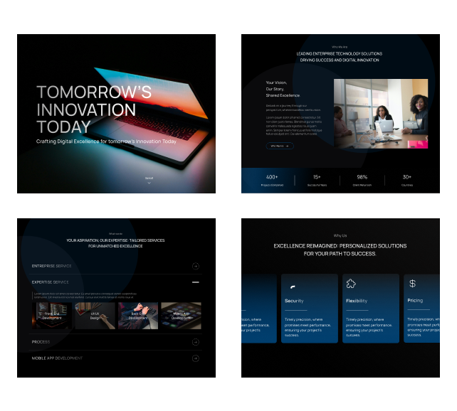
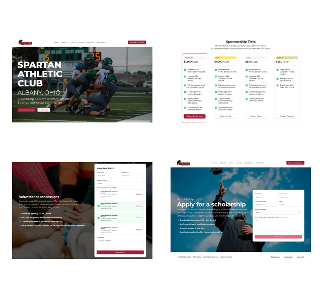
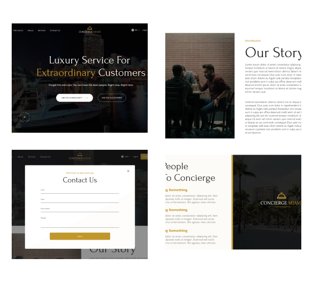
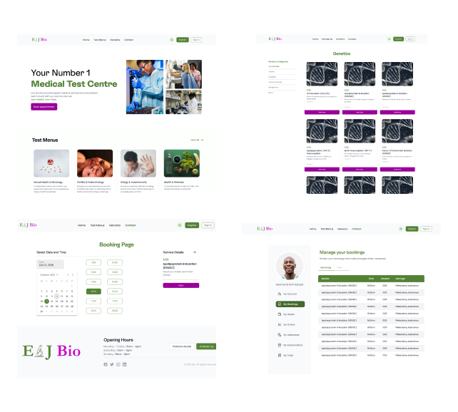
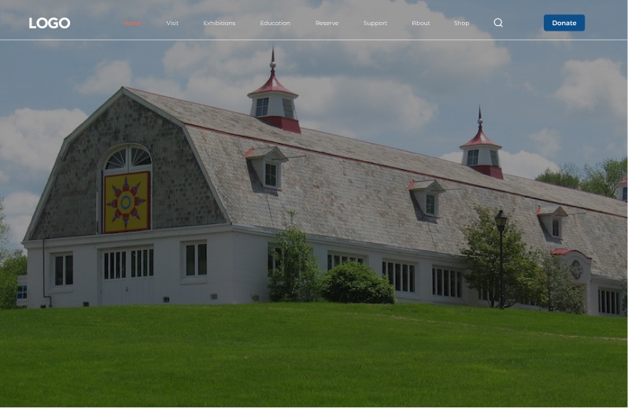
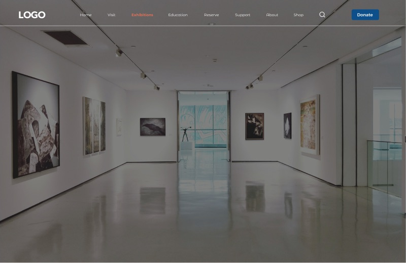
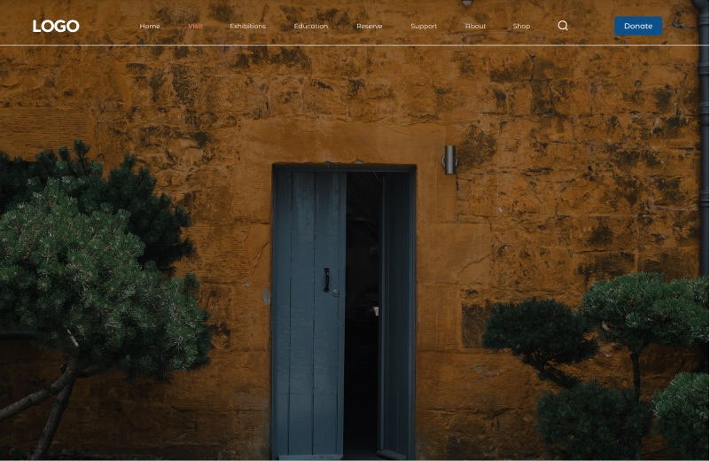
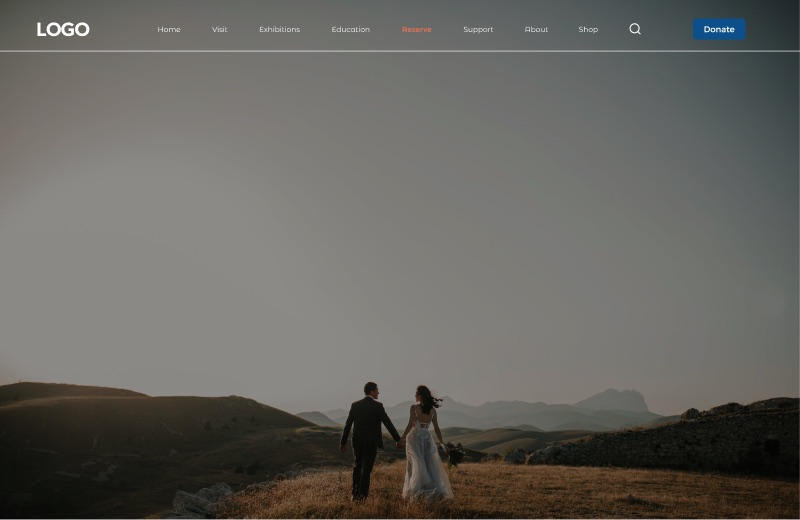

Software Development
Kumateck
Landing page for an enterprise technology solutions company — dark editorial aesthetic with services, testimonials, and contact sections.
View in figma (opens in a new tab)I designed five websites across different industries: Kumateck, a software development company; Spartan Athletic Club, a nonprofit supporting student athletes in Ohio; Concierge Miami, a luxury vehicle and transport service; E&J Medical Centre, a healthcare provider; and The Dairy Barn, an arts center in Athens, Ohio, which I redesigned as a class project with a real client. For each one, I started with what the audience needed to do, whether that was applying for a scholarship, signing up to volunteer, booking a medical test, planning a visit, or contacting a service, and built the page structure around that action. I designed the visual direction for each client, from a dark editorial look for Kumateck to a clean, clinical one for E&J, along with the typography and layouts, and presented the work in Figma.







